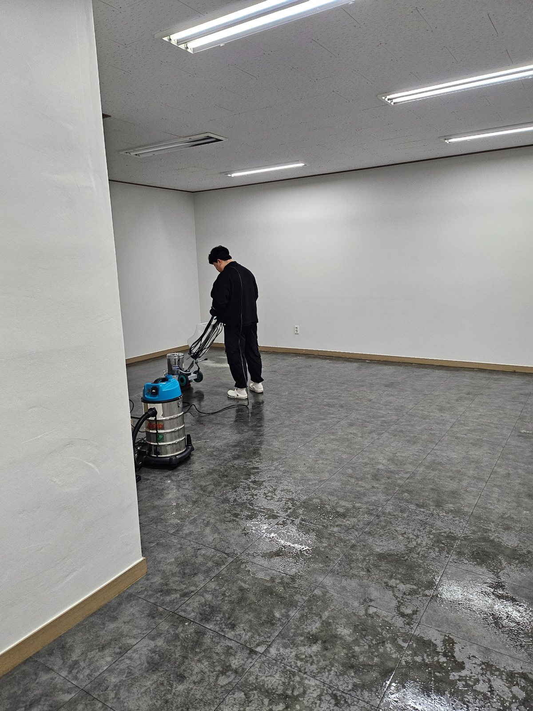
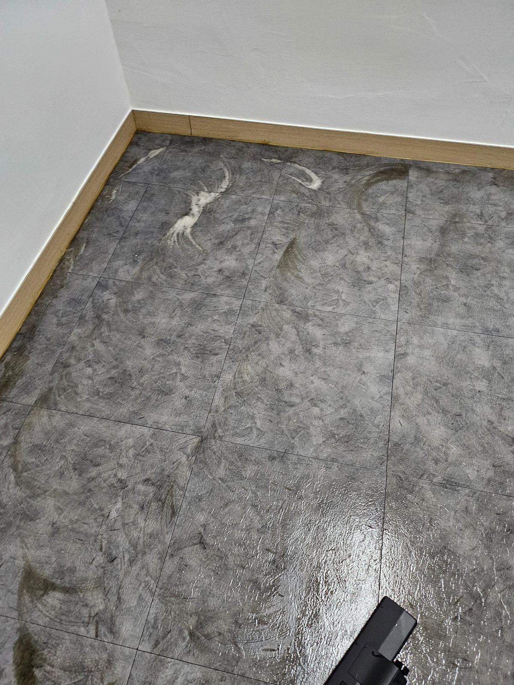
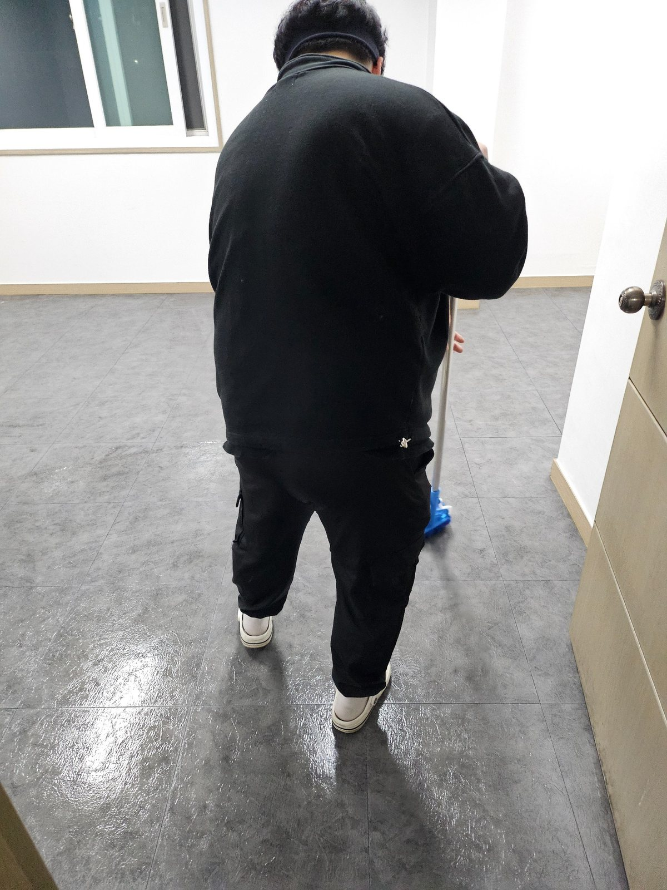

GIMHAE HALLIM FLOOR MACHINE CLEANING
김해 한림공단 사무실 바닥 기계세척 | 바닥 오염 집중관리
김해 한림공단권 사업장을 기준으로 구성한 사무실 바닥 기계세척 작업사례입니다. 넓은 바닥에 누적된 오염이나 수작업만으로 정리가 어려운 구간은 바닥 상태를 확인한 뒤 장비를 활용해 세척하고 오염수를 회수하는 방식으로 관리할 수 있습니다.
이번 사진에서는 넓은 바닥에 세정 작업을 진행하고 장비를 이용해 오염을 풀어낸 뒤, 바닥 전체를 다시 정리하는 과정을 확인할 수 있습니다. 퍼펙트케어는 사업장 바닥 상태와 오염 정도를 먼저 확인한 뒤 필요한 작업 범위를 무료 방문견적으로 안내합니다.
현장 사진으로 보는 작업 내용
각 사진 아래에 실제 공간에서 확인할 수 있는 관리 포인트를 자세히 설명했습니다. 단순히 사진만 나열하지 않고 바닥, 가구 주변, 공용동선과 장비 작업 범위를 함께 확인할 수 있도록 구성했습니다.

바닥광택기를 이용한 집중세척
넓은 바닥은 수작업만으로 오염을 균일하게 제거하기 어려운 경우가 있습니다. 바닥 상태를 확인한 뒤 광택기를 사용해 표면에 누적된 오염을 풀어내고, 건습식 장비를 함께 활용해 작업 효율을 높입니다.

모서리와 벽면 주변 오염 확인
장비 세척 후에도 모서리와 벽면 주변에는 오염이 남을 수 있어 별도로 확인합니다. 바닥 전체를 한 번에 보는 것이 아니라 가장자리와 중앙부를 나눠 상태를 확인하면서 마무리합니다.

기계세척 후 바닥 마무리 작업
세정 작업이 끝난 뒤에는 잔여 오염과 물기를 정리해 바닥 표면을 안정적으로 마무리합니다. 작업 후 바로 사용할 공간이라면 통행 시 미끄럼이 없도록 충분히 정리한 뒤 최종 상태를 확인합니다.
김해 사업장 청소 무료 방문견적
사무실, 공장, 학원, 상가, 화장실, 회의실 등 사업장 유형과 이용량에 맞춰 작업 범위와 관리 주기를 상담합니다.